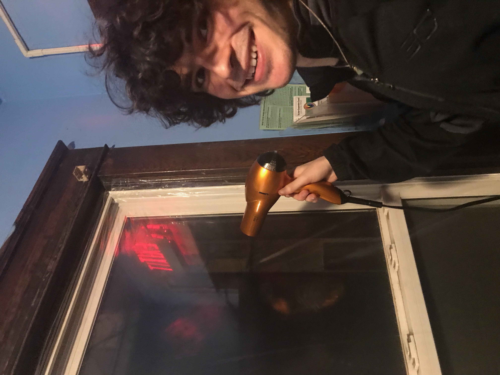
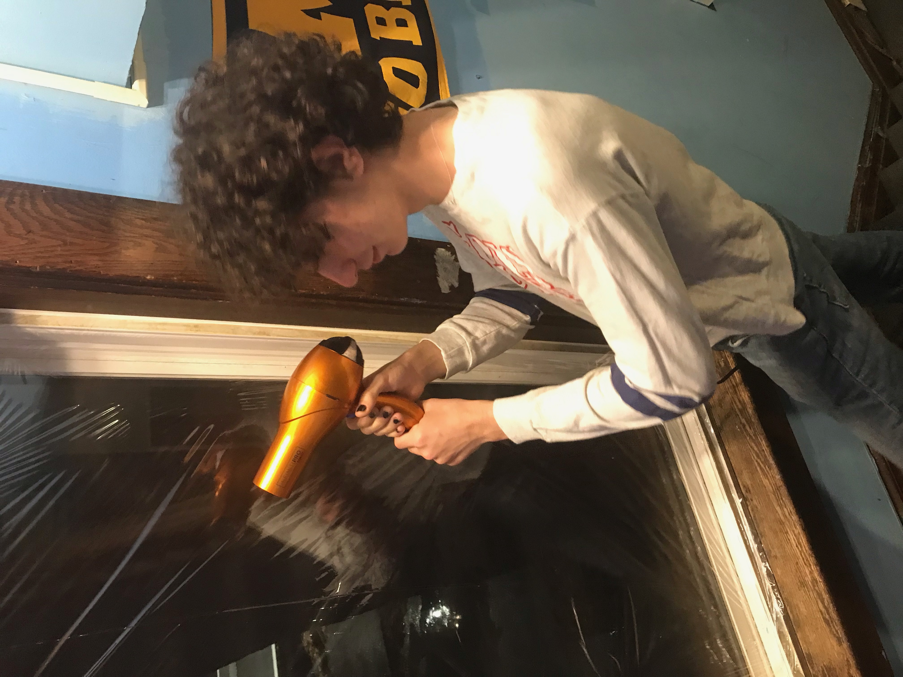
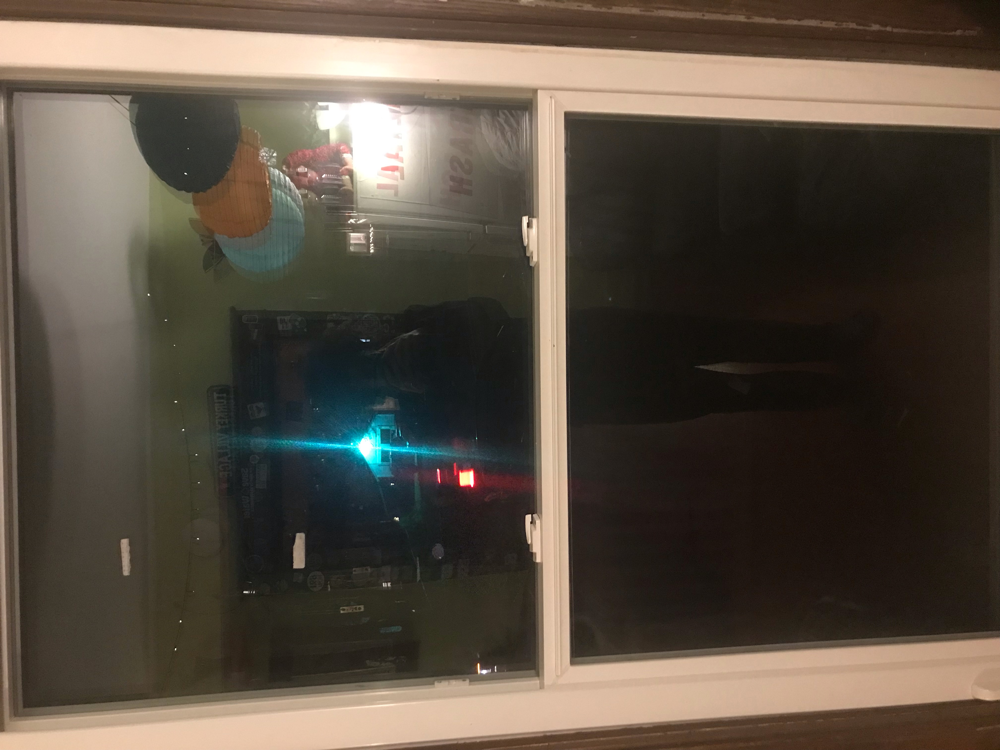
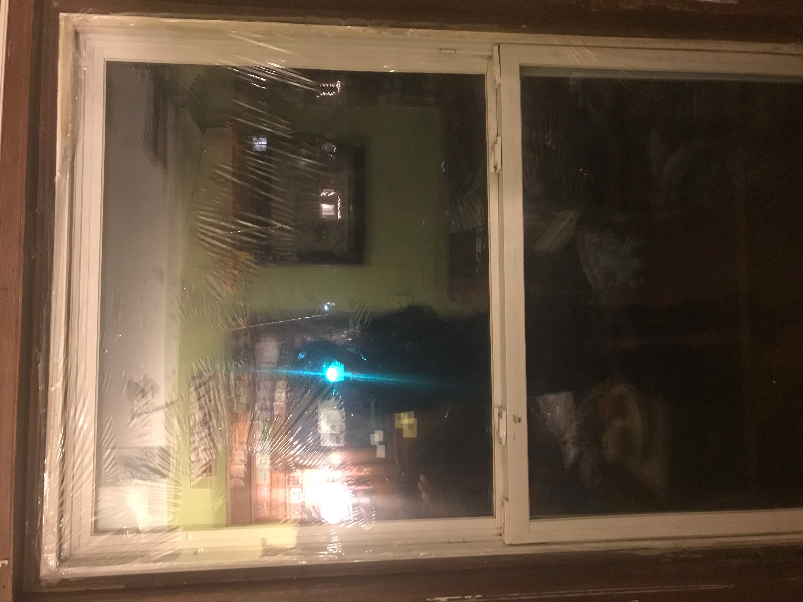

Winterproofing Process
Our winterproofing process was a little difficult for a few reasons. The first was that we didn't have many resources to work with, so we weren't able to buy as much as we wanted The second was that everyone in our house got covid the week we were planning on setting everything up, meaning we were all thrown into chaos and winterproofing was the last thing on our minds. Nevertheless, we prevailed!
With that out of the way, here's a few pictures showing the process of us winterproofing the house!


Before and After:

